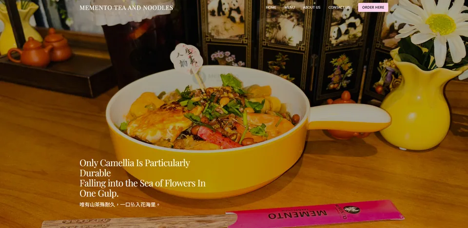

Web & AI / Web development
Web POS
A restaurant-facing website from the Memento POS project collection.

The idea behind the interface.
An existing web-development project retained from the original portfolio. Its supplied Memento POS image shows a restaurant website with a featured dish and menu navigation, providing the customer-facing side of the collection.
In the supplied preview
- A restaurant-focused web presentation.
- Featured food imagery and clear menu navigation.
- A companion to the Management Dashboard portfolio entry.
Scope & context
Presented from the original portfolio screenshot. Payment processing, backend features, and a verified live URL were not supplied.